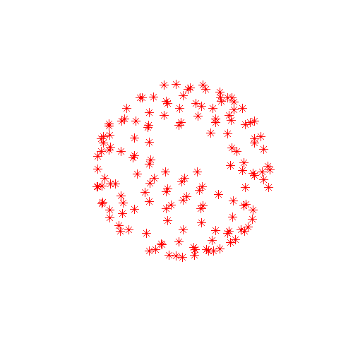
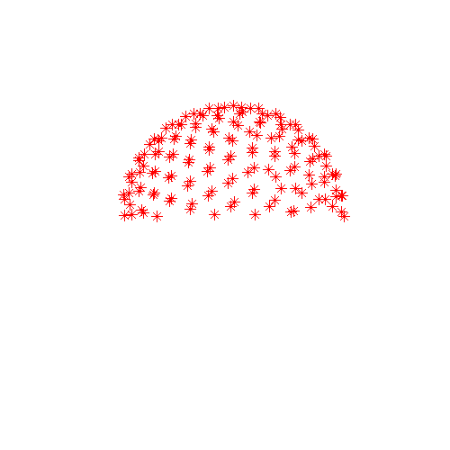

Contents
- Introduction
- Users Guide
- FAQ
eddy -- a tool for correcting eddy currents and movements in diffusion data
This is a new tool to correct for eddy current-induced distortions and subject movements. It simultaneously models the effects of diffusion eddy currents and movements on the image, allowing it to work with higher b-value data than has been possible with for example eddy_correct (FSL's earlier tool for eddy current correction). As of FSL 5.0.10 (and a 5.0.9 patch) it also, optionally, performs outlier detection to identify slices where signal has been lost as a consequence of subject movement during the diffusion encoding. These slices are replaced by non-parametric predictions by the Gaussian Process that is at the heart of eddy.
Selected slice in 300 volumes of a data set from the HCP project |
|
On the left before correction and on the right after correction for susceptibility, eddy |

The diffusion signal is modelled using a Gaussian Process, which means that it makes very few assumptions about the diffusion signal (unlike parametric models such as for example the diffusion tensor). The only two assumptions are
- the signal from two acquisitions acquired with diffusion weighting along two vectors with a small angle between them is more similar than for two acquisitions with a large angle between them
the signal from two acquisitions along vectors v and -v is identical.
From these two assumptions it also follows that:
if v1 and v2 are two vectors with a "small" angle between them so that it can be assumed that the signal from the corresponding acquisitions is "similar" then v1 and -v2 are equally similar.
Because of the way the diffusion signal is modelled, and because eddy needs to be able to distinguish between signal variation caused by diffusion and that caused by eddy currents/movements it is beneficial if the data is acquired with either
A set of diffusion encoding directions that span the entire sphere and not just a half-sphere
- A blip-up-blip-down (phase encode reversed) acquisition
or with both. Note that "sampling on the whole sphere" does not imply twice as many directions. From a diffusion perspective sampling along v and -v is exactly equivalent whereas from the perspective of eddy current distortions they are different. One can therefore have two sampling schemes that both sample the diffusion evenly and equally well (and with the same total acquisition time), but where one is on the half sphere and the other on the whole sphere. To make this concrete look at the two sampling schemes below. In these plots the end of each vector is marked with an x-marker. They sample the diffusion in exactly the same way but the one on the left facilitates correcting for eddy currents while the one on the right does not. Note also that either of these schemes can easily be created from the other. To for example transform the half sphere scheme to the whole sphere scheme one just need to replace half the vectors by their negations.
 |
 |
Diffusion sampled on the whole sphere |
Diffusion sampled on the half sphere |
In order to check your own diffusion directions you can use the following Matlab commands
bvecs = load('bvecs'); % Assuming your filename is bvecs
figure('position',[100 100 500 500]);
plot3(bvecs(1,:),bvecs(2,:),bvecs(3,:),'*r');
axis([-1 1 -1 1 -1 1]);
axis vis3d;
rotate3dThe final command (rotate3d) will allow you to use the pointer to rotate the plot which is essential as from some angles a half sphere looks just like a whole sphere.
If data has neither been acquired on the whole sphere or with reversed PE-directions there is a good chance that it will still work well. In that case it can be beneficial to use the --slm=linear parameter as described in the manual.
For eddy to work well there also needs to be a minimum number of diffusion directions. The reason for this is that the concept of "close" and "distant" vectors becomes a little pointless when there are only a handful of vectors. The "minimum number" will depend on the b-value (with a larger number of directions needed for higher b-values), but it appears that the minimum is ~10-15 directions for a b-value of 1500 and ~30-40 directions for a b-value of 5000.
If it sounds like your data might be a good candidate for eddy I suggest you go on to read the manual.
If you haven't already acquired your data
If you have taken the very sensible, and unusual, step to read this documentation before acquiring your data, here are some advice.
First of all let us assume you have some maximum scan time that you cannot exceed and that this allows you to acquire N volumes. Secondly, to keep things simple, let us assume that you plan to acquire data in a single (non-zero) shell. Thirdly, you intend to run tractography on your data.
If N < 80 we recommend you acquire all your diffusion weighted images with a single PE-direction, that you acquire N unique diffusion gradients/directions optimised on the whole sphere (see above). Please note that the gradients g and -g are not unique, and that you should not acquire both. We further recommend that you acquire 2-3 b=0 volumes with an opposing PE-direction for use with topup, and that you acquire these immediately prior to the full diffusion data set. An example acquisition would be something like
PE-dir : A->P A->P P->A P->A P->A P->A P->A ...
b-value: 0 0 0 0 1500 1500 1500 ...
It can also be a good idea to intersperse additional b=0 volumes in the main data set. One in sixteen for example.
If N > 120 we suggest you consider acquiring N/2 unique diffusion gradients/directions, each acquired twice with opposing PE-directions. In this case N/2 is still > 60, which is sufficient angular sampling for most applications. The opposing PE-directions offers the option to use a different type of "interpolation" that we call "least-squares reconstruction". It works by combining the data acquired with the two PE-directions to solve the inverse problem "what might the truth look like that produce these two distorted data sets?". The method is described in detail in Andersson et al., 2003 in the reference list below. It is able to recover some of the lost resolution in areas that have been compressed by susceptibility-induced distortions.
If N is between 80 and 120 it will depend on what model you will use for your tractography, how many fibres you will model per voxel etc.
Referencing
The main reference that should be cited when using eddy is
Jesper L. R. Andersson and Stamatios N. Sotiropoulos. An integrated approach to correction for off-resonance effects and subject movement in diffusion MR imaging. NeuroImage, 125:1063-1078, 2016.
If you use the --repol (replace outliers) option, please also reference
Jesper L. R. Andersson, Mark S. Graham, Eniko Zsoldos and Stamatios N. Sotiropoulos. Incorporating outlier detection and replacement into a non-parametric framework for movement and distortion correction of diffusion MR images. NeuroImage DOI: 10.1016/j.neuroimage.2016.06.058.
You are welcome to integrate eddy in scripts or pipelines that are subsequently made publicly available. In that case, please make it clear that users of that script should reference the paper/papers above.
Other papers of interest
For those interested in understanding the inner workings of eddy the following paper describes how it makes model-free predictions of what a diffusion weighted image should look like
Jesper L.R. Andersson and Stamatios N. Sotiropoulos. Non-parametric representation and prediction of single- and multi-shell diffusion-weighted MRI data using Gaussian processes. NeuroImage, 122:166-176, 2015.
The "least-squares reconstruction" referred to above is described in
Jesper L. R. Andersson, Stefan Skare and John Ashburner. How to correct susceptibility distortions in spin-echo echo-planar images: application to diffusion tensor imaging. NeuroImage, 20:870-888, 2003.
The following paper compares the performance of eddy to the previous FSL tool eddy_correct
Mark S. Graham, Ivana Drobnjak and Hui Zhang. Realistic simulation of artefacts in diffusion MRI for validating post-processing correction techniques. NeuroImage, 125:1079-1094, 2015.
References appear here